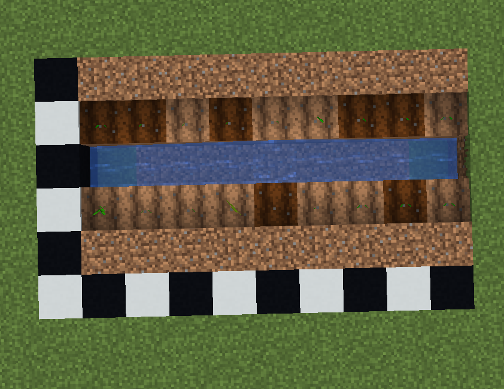
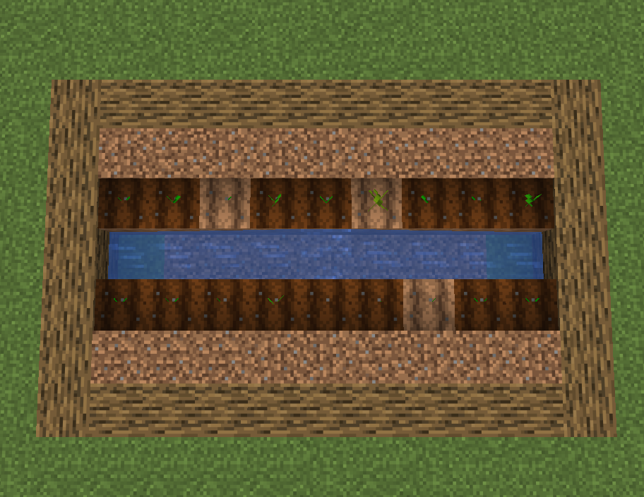

Farm Guide
This section uses a simple melon and pumpkin farm layout that is easy to build, scale, and maintain for reliable food production.
-
1. Find a flat area near your house and clear a 5 by 9 space.

-
2. Dig a 1-block-wide, 9-block-long trench down the center.

-
3. Fill the center trench with water to hydrate nearby farmland.

-
4. Till the dirt rows directly next to water on both sides using any hoe.
-
5. Keep the next outer rows as plain dirt or grass for fruit growth blocks.

-
6. Plant melon and pumpkin seeds on the tilled farmland rows.

-
7. Place border blocks around the outside to contain farm growth area.

-
8. Harvest melons and pumpkins when mature, and leave stems intact for regrowth.